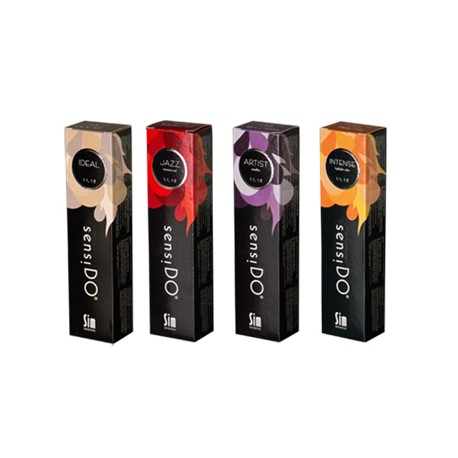
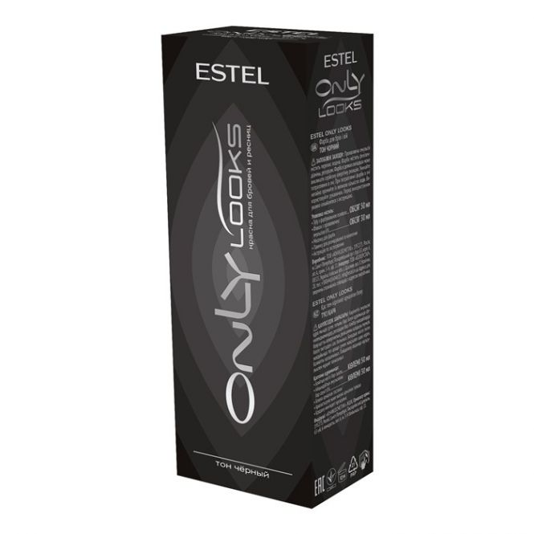
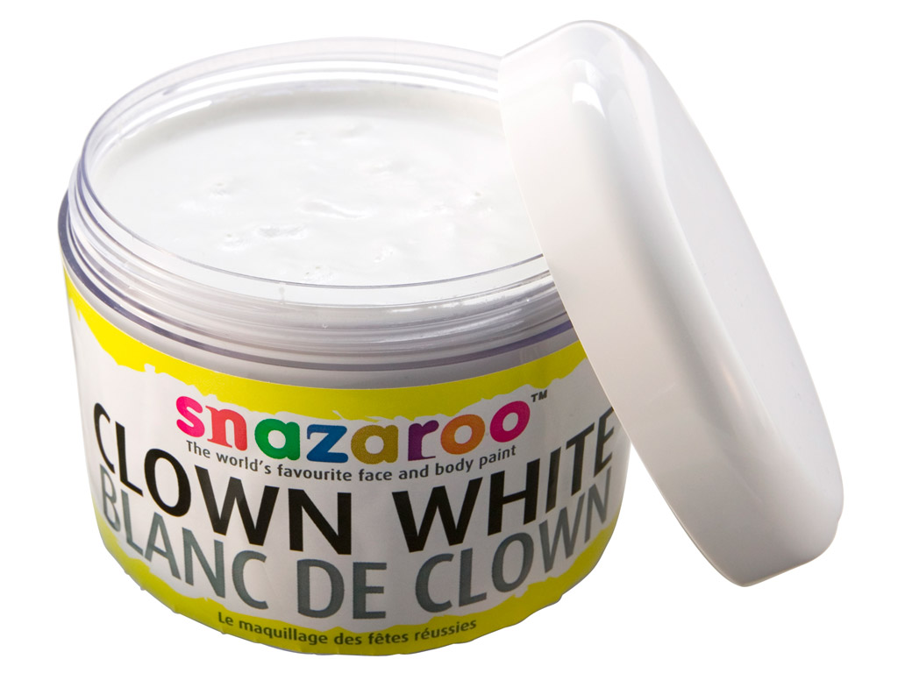
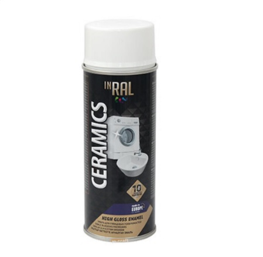
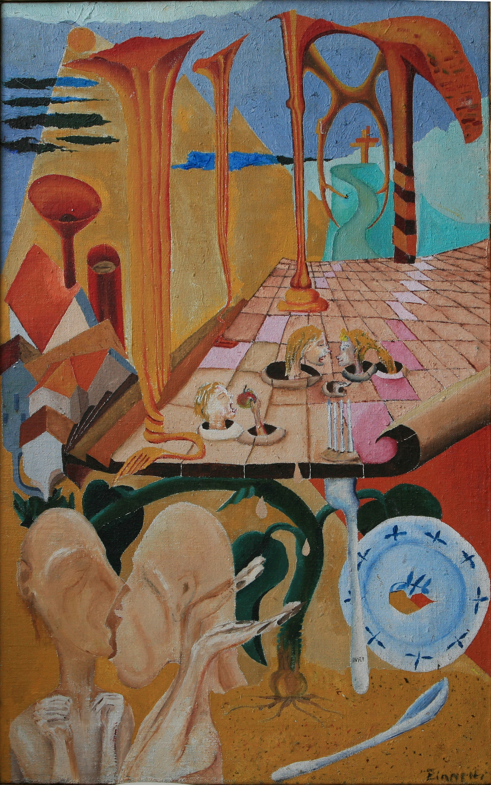
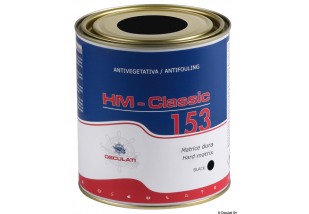
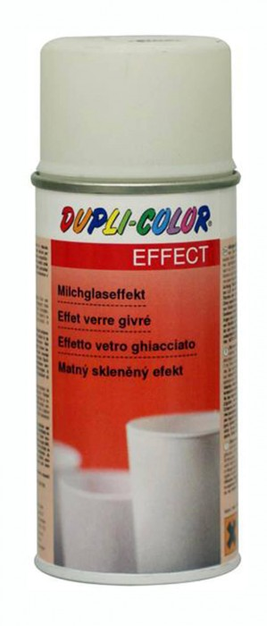

Photo gallery
2020.10.29 05:36














- Dažai - Akrilo dažai ir priedai - Dailės prekės
Dažai lauko medienai Villa Ultima, antracito pilki, 9L Dažų tipas: Emulsiniai Dažų spalva: Pilka Blizgumas: Pusiau matinis Skirta apdailos darbams: Lauko Džiūvimo laikas (prieš perdažant): 2 h - Plaukų dažai
Dažai, lakai. Norėdami atnaujinti namus be šių priemonių neišsiversite. Dažymas, lakavimas - seni patikimi įvairių paviršių apdailos būdai. Šiandieninė dažų, lakų pasiūla atveria kur kas platesnes nei kada nors anksčiau galimybes. Dabar gali būti patenkinti net išrankiausių pirkėjų poreikiai. - Medienos dažai - Dažai medienai, impregnantai | Dazai24.eu
Atstovaujame klijų gamintojus medienos ir baldų pramonei. Dažai, lakai, gruntai, klijai metalo bei medienos pramonei. Gamintojai: Dynea AS, Barpimo S.A, Durante ... - Dažai - Dažai, dažų priedai - Senukai.lt
Plaukų dažymui - Plaukų dažai. Informuojame, kad šioje svetainėje naudojami slapukai (angl. cookies). Paspaudę mygtuką „Sutinku“ arba naršydami toliau patvirtinsite savo sutikimą. - Kreidos namai
Purškiami dažai „FLUO TP“ yra labiausiai matomi ir fluorescenciniai žymekliai rinkoje. Jie yra ypač populiarūs tarp matininkųir kelininkų. Taip pat jie naudojami atliekant visus bendruosius civilinės inžinerijos darbus: magistralinius kelius, žemės darbus, vamzdynų tiesimą ir statybą. - Dažai - Flügger Lietuva
Dažai, gruntai 90. Rūšiavimas Vaizdavimas Eilutėmis Stulpeliais. Rodyti po Šviesos neatspindintys vandeniniai balti vidaus baldų dažai Tikkurila Anti-Reflex White 10L ... - Dažai | IGIS
Švediški dažai vidaus ir išorės darbams. Dažai sienoms, luboms, durims, grindims. Dažai medienai. Dažymo įrankiai. Glaistas. Gruntas. Pramoniniai dažai ir ... - Dažai, gruntai - Bauen
Pasidomėkite, kokie dažai yra pritaikyti tam tikrų darbų atlikimui: jie gali būti skirti tvorų, langų, durų dažymui, ir t.t. Geriausi medienos dažai bus tie, kurie yra skirti konkrečiai medienai, pavyzdžiui, spygliuočiams, ar pan. - Emulsiniai dažai - Dažai - Senukai.lt
Akriliniai fasadų dažai IGIS F; Gruntiniai dažai; Matiniai dažai IGIS 3; Matiniai dažai IGIS 7; Matiniai dažai SPALVA; Matiniai dažai TAKTIKA 5 NAUJIENA - Dažai - Statybų Turgus
Aukščiausios kokybės teptukai, skirti tolygiam dažų paskirstymui ir ilgaamžiškumui. Sodrių ir aiškių spalvų dažai. Dažai